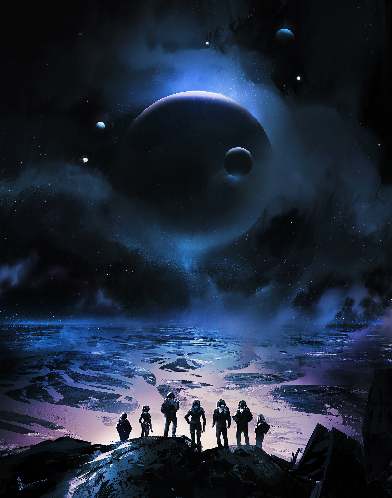
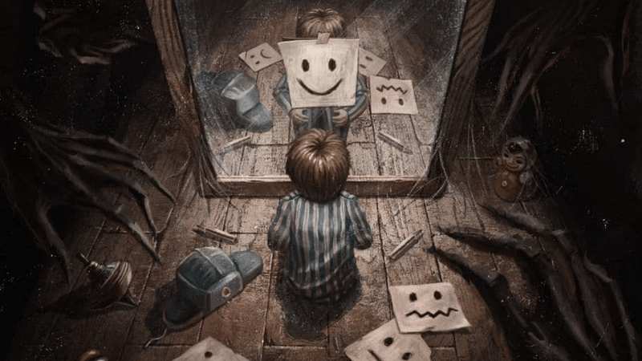
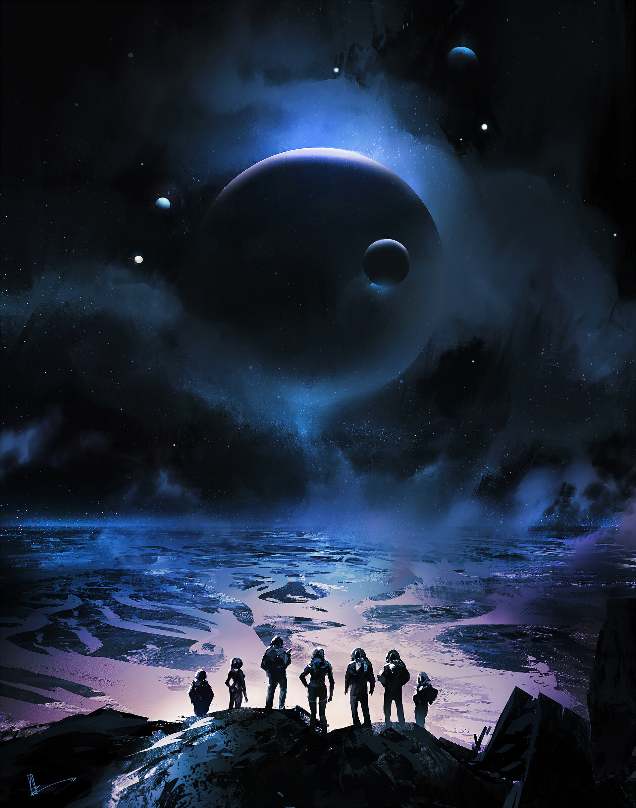
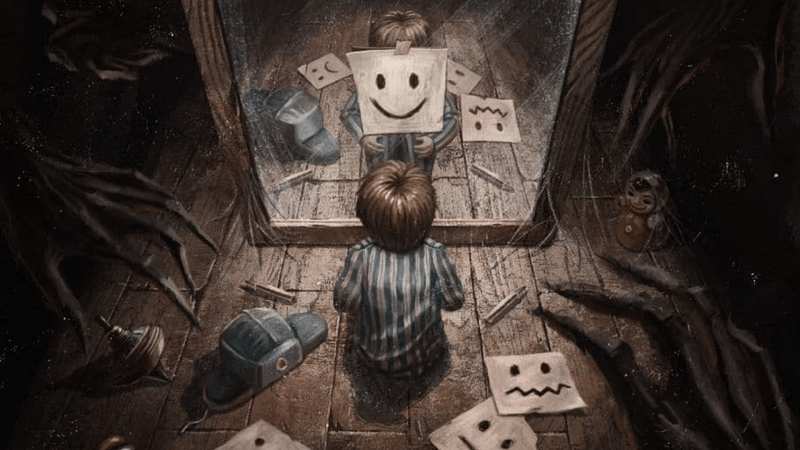

Історії - це оповідання, в яких описуються події, персонажі, конфлікти та ідеї.
Вони можуть бути реальними чи вигаданими, короткими чи довгими, передаватися усно, письмово чи через візуальні медіа.
Типи історій:
✅ Літературні:
Романи – великі твори з розвиненим сюжетом та персонажами.
Новели – короткі, але змістовні оповідання.
Казки – фантастичні історії, часто з мораллю.
Міфи і легенди – давні історії про богів, героїв та походження світу.
✅ Особисті історії (автобіографічні): Історії з життя, спогади, щоденникові записи.
✅ Історичні оповідання: Реальні події, переказані художньо чи документально.
 


